| 「書き言葉」って？: レポート・報告書を書くための基礎知識 Academic Writing in Japanese | |
| 深尾百合子 | |
| (2018) | |
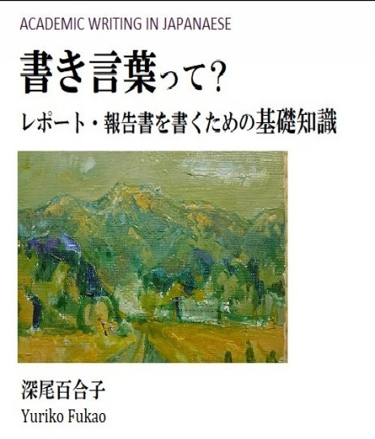
書き言葉って？
レポート・報告書を書くための基礎知識
目次
第１ 章 「書き言葉」って何？
第２ 章 レポートではダメな表現！
第３ 章 「接続詞」をうまく使う！
第４ 章 表現の使い方・使い分け
第５ 章 「日本語の文法」って？
第６ 章 「は」で文章が決まる！
はしがき
この本はすでに出版している本 (巻末に紹介) を再構成したダイジェスト版です。前書を書いたきっかけは，学部学生の実験レポートを見せてもらったとき，ほとんどが「話し言葉」の入り混じった文章で，「書き言葉」という概念を知らないのではないかと思ったことです。
学生，新入社員でレポートなどを書かなければならないが，「書く」ことに自信が持てないという人たちが少なからずいます。この本はそういう人たちに読んでほしいと思います。日本人でも日本語の文章を書くことはむずかしいのです。「書けない！」と悩んでいる人は初めから頭の中にある書くべきことをすぐ文章にしようとしている人ではないでしょうか。
何をどう書いていけば，文章にたどり着けるかを知りたい人はこの本を読んでください。ほんとうに基礎的な「書き言葉」の知識を大学1，2年生が書いた文章を例にあげて，説明しています。この本を読むと日本語の文法（国語の文法ではなく）が少し理解できるようになります。
理工系の学生たちは高校・大学と理工系の教科書を読んできたはずなのですが，内容だけに興味を持っていた人が多いようです。それで，専門指導の先生方は，卒論を書かせる時期になると「 [てにをは] (助詞)の使い方から直さなくちゃなんないから大変ですよ」と毎年，嘆いています。しかし，その事態は10年以上経っても変わっていないようです。
会社の上司に読んでもらえるレポート・報告文を書くためには，特別な才能は必要ないと思います。基本的なルールを知り，訓練をすれば，書けるようになります。基本的な書き方を訓練するためには，学生だれもが知っている基礎科学的トピック・現象（中学校理科レベル）などについて書き，添削してもらうのがいい方法だと思います。
この本では，最も問題となる第２章「レポートではダメな表現」・第３章「接続詞をうまく使う」をまず，読んでいただきたいと思います。第５章「日本語の文法って？」６章「"は"で文章が決まる！」は，文の構造の基本的な概念を知り，読みやすい文章を書くための参考になると思います。この部分は，外国語として日本語を学ぶ学習者のための文法説明を基にしているので，学校で教えている国語文法とは違います。
この本では，学生が理解しやすいように抽象的な説明よりも実際に学生が書いた実験レポートから例を採り，不適切な点を指摘し，「なぜそれが不適切なのか」が理解できるように説明することを心がけました。データとした実験レポートの文章には，取り上げた項目に関係ない部分に不適切な表現が多いものがあり，焦点がぼける可能性があったので，一部適切な表現に書き換えました。ただし，数値については原文のままです。理工系の文章の書き方を教えている教員の方々にも読んでいただき，ご意見をいただけるとありがたいと思っています。
本書に取り上げた一連の例については，事前に東京農工大学工学府，中村暢文氏に内容をチェックしていただきました。また，同氏の研究室の学生を対象としたセミナーも行わせていただき，その解答について中村先生と議論させていただいたことは貴重な経験となりました。ここに感謝の意を表します。また，同工学府の実験レポートを提供してくださった教員の方，アドバイスをくださった先生方に感謝いたします。
深尾百合子
１．「書き言葉」って何？
1.1 「書き言葉」と「話し言葉」
学部学生の実験レポートで何が一番問題かというと，「書き言葉」と「話し言葉」の区別ができていないことです。学生たちは高校まで理科系の教科書を読んでいるはずですが，そこに書かれている内容だけに集中していて，文章そのものは全然見ていないようです。それに最近は手紙も書きませんし，メールを書くぐらいです。メールもおしゃべり口調そのままだったり，絵文字を使ったりして，文になっていません。
学生の実験レポートを読むと，それなりに文章を書いているつもりなのでしょうが，「話し言葉」が混じっています。
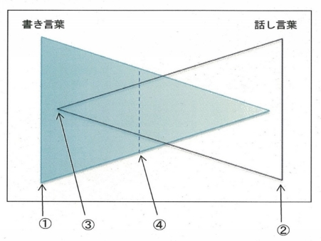
以前大学で行った「日本語文章作成」の授業（学部生対象）で，「話し言葉」と「書き言葉」の違いを意識したことがあるか聞いてみると，ほとんどの学生が「なに，それ？」という顔をしていました。
ここでいう「書き言葉」と「話し言葉」とは，レポート・報告書などの文章についてです。新聞記事，雑誌，小説などは対象にしていません。
「書き言葉」と「話し言葉」の関係は，単純に表すと前ページの図のようになっていて，歴然と分かれていません。
①に該当する「書き言葉」は，レポート・論文などで，②の「話し言葉」は日常的な会話などです。③あたりにくる「話し言葉」は，例えば，プレゼンテーションです。「です・ます」体で話しますが，ほぼ「書き言葉」に近いものです。④は取扱い説明書とか，一般向けの科学入門書などで語るような文章（「です，ます」）で書かれたものです。
1.2 文体
「文体」というのは，文末が 「です，ます」 か 「である」 かの違いです。「である」体は，日本語教育の分野では「普通体」と呼ばれています。
例えば ，
動詞 ...「行く」「行かない」「行った」「行かなかった」
形容詞...「高い」「高くない」「高かった」「高くなかった」
～です...「～である」
などを指します。理工系の専門の文には「名詞＋だ」という文末はありません。「である」を使います。新聞などでは「名詞＋だ」とか「名詞止め」も使われています。
「です，ます」というのは，「話し言葉」で使いますが，取扱い説明書などにも使われています。上の例のような「普通体」は「話し言葉」で日常的に使います。「名詞＋だ」は会話などでは出てきますが，「である」はほとんど使いません。
以下に文章例をあげます。数字は前節の図の番号です。①の下の例は新聞のコラムです。「 ... 」の部分に「秋。」というのがあります。こういう書き方を 「体言止め」 と言いますが，ふつうは名詞のあとに「だ」をつけます。新聞などの記事では 「だ」 が使われますが，レポート・報告書では 「名詞＋である」 を使います 。 － をつけた部分の表現などは事実を記述する文章には使われません。
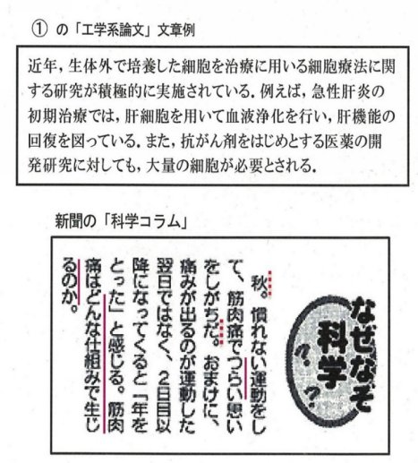
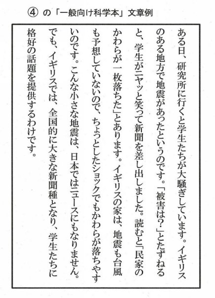
1.3 句読点
細かいことですが，「句読点」についてです。皆さんは理工系の論文にどの 「てん」「まる」 が使われているか知っていますか。
理工系の論文，大学の教科書などには「，」と「．」が使われています。中学・高校の科学系の教科書は「，」「。」になっています。中高校生向けの科学的内容の本には，縦書きのものがありますが，それは「、」「。」です。文系の論文などでは横書きでも「、」「。」というのがあります。
句読点
...「，」 「．」 ( 横書：理工系論文・レポート ) →例①
「，」 「。」 ( 横書：中学・高校の教科書 )
「、」 「。」 ( 縦書：科学系一般向けの本 ) →例④
「、」 「。」 ( 横書：取扱い説明書など )
学生の実験レポートを見るとほとんどが 「、」「。」 か 「，」「。」 を使っています。教科書を読んでいるはずですが，気づいていないし，先生方も注意していません。学生は，ワープロの既定の設定のまま使っているようです。
前掲①の工学系論文のような文章には「，」と「．」が使われています。レポート・報告書なども同じです。④は一般向けの科学本の一部です。縦書きですから，「、」と「。」になっています。以下の文章は，高校の教科書です。横書ですが，「，」「。」が使われています。
２． レポートではダメな表現 ！
2.1 「～てしまう」
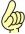 「 ～てしまった 」は使わない！
学生の実験レポートの「考察」の部分には，よく「～てしまった」という表現が使われますが，これは避けてください。
「～てしまう」を使う気持ちはよくわかります。大学１,２年生のころの実験には理論値がわかっていて，実際に器具を使って測定し，実験値を出すというものがあります。その値が理論値と大きく違うと「～てしまった」と書きたくなります。
☆ なぜ使わない？
「～てしまう」には「思い通りの値がでなかった，失敗した」という気持ちが表れています。理工系の文は事実を客観的に記述することが重要です。気持ちを表す表現は避けます。
次ページ以降に 不適切な使用例 をあげて説明します。
× 例１
[原文]
濃度が高くなってしまったということは、停止が反応終了点よりも早く、少ない滴下量になってしまったためと考えられる。
↓
[不適切な部分]
濃度が高くなっ てしまった ということ は 、 停止が反応終了点より も 早く 、 少ない 滴下量になっ てしまった ためと考えられる 。
注
＊「高くなっ てしまった 」は「高くなった」にします。
＊「ということは」は「原因」を書きたかったと思われる
ので，「...高くなった原因は」とします。
＊「少ない滴下量...」の部分は「滴下量」を主語にした
ほうが読みやすいと思います。
＊「なっ てしまった 」は事実を示す「少なかった」あるいは
「十分ではなかった」とします。
＊「、」「。」は「，」「．」にしてください。
↓
[修正例]
濃度が高くなった原因は，[滴下]停止が反応終了点より早く，滴下量が少なかったためだと考えられる．
「 ～てしまった 」
× 例２
[原文]
デジタルインジケータが他より大きな値を示した理由として考えられるのは，対象物を台にしっかりと押しつける時に，押しつける力が足りずにわずかながら浮いてしまったためと予想される．
↓
[不適切な部分]
デジタルインジケータが他より大き な 値を示した理由 として考えられるの は，対象物を台に しっかりと 押しつけ る時に ， 押しつける 力が 足りず に わずかながら 浮い てしまった ためと 予想される ．
注
＊「大き な 」ではなく，「大き い 」を使ってください。
＊ 「 として考えられるの」の部分は不要です。
＊「しっかり」は話し言葉です。
＊「押しつけ る 時に」は行為を行った後のことなので，
「押しつけ た とき」とします。
＊「時に」はひらがなで書きます。
＊「 押しつける 力が」は前の情報と重なっているので，
「 その 力が」にします。
＊「足りずに」は主観的なので「十分ではなく」などの
表現がいいと思います。
＊「わずかながら」は主観的表現です。
＊「浮い てしまった 」は測定時に「浮いていた」という
状態を表す表現にします。
＊結果の考察に「予想される」は使いません。
「推測される」「考えられる」などが適切です。
↓
[修正例]
デジタルインジケータが他より大きい値を示した理由は，対象物を台に押しつけたとき，その力が十分ではなく，わずかながら浮いていたためと推測される．
★ 「～てしまう」 という表現にはもう一つ「完了した」
という使い方（例えば，「一晩で読んでしまった」）が
あります。これは日常会話で使ってください。
★ ～て...
その他の「～て...」表現の中で，レポートなどで使
われる表現を ○ ，使わない表現を × ，たまに使われ
ている表現を △ で分類します。
○ ：「～ている」（この活用形「～ていた」「～ていない」
「～ていなかった」「～ており」「～ておらず」）
△ ：「～ておく」「～ていく」「～てくる」
× ：「～てから」「～てみる」「～てある」など
注 ： 「～ていただく／くださる」 などの表現は，対人
関係を表すため，書き言葉には使いません。
ただし，論文の「謝辞｣ の部分には使われて
います。
2.2 「～たら」
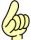 条件「～ たら 」は「話し言葉」 ！
「～たら」という表現はレポートなどには使いません。この本では，「話し言葉」という語を「音声で話される言葉」あるいは個人的なメールのやりとり，一般の人を読者と想定して書かれた文章で使われる言葉という意味で使っています。ある分野の専門家に読まれることを想定している文章に使われる「書き言葉」以外のすべてを意味しています。
☆ レポートなどで は ，
・条件を表す表現は 「～と」「 ～ば 」 を使います。
・ 「～たら」「 ～なら 」 は使いません。
... 「名詞＋なら」 は 「名詞＋であれば」 とします。
以降に 不適切な使用例 をあげます。
× 例１
[原文]
２回目以降，この点に注意して測定したら，理論値に近づいた．
↓
[不適切な部分]
２回目以降，この点に注意して測定し たら ，理論値に近づいた．
注
＊この文の場合，「測定し たら 」は「～すると」あるいは
「～した結果」に変えます。
＊この文は実験した結果を述べたものなので，「～ば」は
使えません。「～ば，...」の文末には，過去形を使いま
せん。
↓
[修正例]
２回目以降，この点に注意して測定した結果，理論値に近づいた．
「 ～ たら 」
× 例２
[原文]
終点付近では一滴ごとに，注意深く色の変化を観察し，色が変化したと感じたら，その値をまめに記録した事が好結果につながったと考えられる．
↓
[不適切な部分]
終点付近では一滴ごとに，
注意深く
色の変化
を観察し，
色が変化したと
感じ
たら
，その値を
まめに
記録した
事
が
好
結果に
つながった
と考えられる．
注
＊「感じた」という感覚的な動詞ではなく，「見られた」を
使います。
＊この文では「～ たら 」ではなく，「～ とき 」が適切です。
＊「色の変化」が繰り返されています。「観察し」の後は
「変化が見られたとき」とします。
＊「まめに」は口語です。「逐次」などとします。
＊「 事 」はひらがなで「 こと 」と書いてください。
＊「 好 結果」というのは「理論値に近い結果」ということを
述べたかったのではないか考えられます。
↓
[修正例]
終点付近では一滴ごとに色の変化を観察し，変化が見られたとき，その値を逐次記録したため，理論値に近い結果が得られたと考えられる．
☆ 「～と」の使用例
・定量的に見る と それらの差は 大きい ．
・ニュートンの運動の第二法則を適用する と Eq.(3)が
得られ ，...
・コーヒーを机にこぼして放置する と ，周辺部に内部
よりも濃い汚れが 残る ．
・これ以上あげる と (サイクロン分離器が閉塞し) 操作
不能 になった ．
注
＊「と」の前の部分には「終止形」「否定形」を使います。
「～です／ます」「過去形」は使いません。
＊「と」の後に続く文の述語は「形容詞」「である」「可能形」
「受身形」「自動詞」「～(く)なる」などとそれらの「否定
形」です。
＊文末が「過去形」になっている場合は，事前には「予測
していなかった」結果になったことを表します。
2.3 「～ところ」
 「～
ところ
」は使わない！
「～
ところ
」は使わない！
日常会話では 「食べた ところ 」「～る ところ 」「～ ている ところ」 などをよく使いますがレポート・報告書では使いません。意味によって「結果」「時点」などを使います。
× 例１
[原文]
CaCO 3 とMgCO 3 の分子量をそれぞれ100.09g／m oℓ ，84.32g／m oℓ として，重量に換算した ところ ，以下の表5のようになった．
注 ＊この文の場合，「ところ」は「結果」が適切です。
↓
[修正例]
CaCO 3 とMgCO 3 の分子量をそれぞれ100.09g／m oℓ ，84.32g／m oℓ として，重量に換算した結果，以下の表5のようになった．
× 例２
[原文]
今回の電気的測定法(差動トランス)による結果をグラフにしたところ，理想とされる曲線とは異なったグラフになった．
↓
[不適切な部分]
今回の電気的測定法(差動トランス)による 結果 を グラフに した ところ ， 理想とされる 曲線とは 異なったグラフ になった．
注
＊ 「 結果」は変です。実験で得た「測定値」でしょう。
＊「グラフにする」という表現は使いません。「プロ ッ ト
する」です。
＊「した ところ 」は「した 結果 」とします。
＊「理想」はレポート・報告書には不適切です。「理論」から
導かれたものを意味しているので，「理論曲線」とします。
＊「異なったグラフ」の「異なる」は使い方が間違ってい
ます。このような場合は「～とは違った」「～から外れた」
を使います。
↓
[修正例]
今回の電気的測定法(差動トランス)による測定値をプロットした結果，理論曲線とは違ったグラフになった．
「 ～ ところ 」
× 例３
[原文]
サンプル平均の値を出したところ，同じ条件で1cm持ち上げた時の小振幅と，3cm持ち上げた時の大振幅の周期の差が0.002しかなかったので，大振幅，小振幅に差はないといえる．
↓
[不適切な部分]
サンプル平均
の
値を出した
ところ
，同じ条件で1cm持ち上げた
時
の小振幅
と，3cm持ち上げた
時
の
大振幅の
周期の差が0.002
しかなかったので
，
大振幅，小振幅
に差はないといえる．
注
＊「出した ところ 」は「出した 結果 」とします。
＊「時」は例１のとおり，「場合」にします。「時」を使う
必要がある場合は「とき」とひらがなで書きます。
＊「大振幅」「小振幅」という表現は造語だと思います。
レポートなどでは，その分野で使われるもの以外は辞書に
ある単語を使ってください 。
ここでは「振幅が大きい／小さい」とします。
＊「しか～ない」も書き言葉では使いません。
＊最後の部分は，[有意の差ではない]を挿入するとわかり
やすくなります。
＊根拠を示す場合は「～ので」ではなく「～ことから」を
使います。
↓
[修正例]
サンプルの平均値を出した結果，同じ条件で1cm持ち上げた場合と，3cm持ち上げた場合の周期差が0.002であり，有意の差ではないことから，周期は振幅大小によらないといえる．
2.4 「～しか～ない」
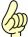 自分の 感情 を入れない！
レポートでは「～しか～ない(動詞否定形)」は不適切な表現です。この表現は書き手の主観的な感情（ある結果・ことがらが期待より少ない，小さいなどの気持ち）を表します。逆の意味の「～も(例：200g も あった)」も使いません。
 ×
例１
×
例１
[原文]
この差は，マイクロメータは測定する面が広くとれるが，デジタルインジケータはピンポイントでしか測れないことによるのではなかろうか．
↓
[不適切な部分]
この差は，マイクロメータは測定する面が 広くとれる が，デジタルインジケータは ピンポイント で しか 測れ ない ことによるのでは なかろうか ．
注
＊「広く とれる 」という部分は，後半の「非常に小さい
(ピンポイント)」と対比させるため「大きい」とします。
＊「ピンポイントで しか ～ ない 」は「測定面が非常に小さい」
ことを意味していると思われますが，レポートの表現として
は不適切です。
＊文末の「...ではなかろうか」は「...」の部分が書き手の意
見・推測である場合に使われますが，レポートなどの文末に
は使いません。
↓
[修正例]
この差は，マイクロメータは測定する面が大きいが，デジタルインジケータは測定面が非常に小さいことによると考えられる．
× 例２
[原文]
ほとんどの金属イオンはpHが高くなると加水分解を引き起こし，沈殿する性質を持っている．そのため，金属イオンとEDTA溶液との反応は，ある 一定の範囲のpHにしか反応が起きない．
↓
[不適切な部分]
ほとんどの金属イオンはpHが高くなると加水分解
を引き起こし
，沈殿する性質を持っている．そのため，金属イオンとEDTA溶液
と
の反応は，
ある一定
の範囲のpH
に
しか
反応が
起き
ない
．
注
＊「引き起こし」は書き言葉ではありません。「加水分解し」
とします。
＊「ある＋名詞」はレポートでは使われません 。
＊「 一定 の範囲」は意味不明です。「 限られた 範囲」と
します。
＊最後の部分の「 しか～ない 」は削除します。「反応が起き
る」が述語なので，「...のpH に 」は誤りで「 で 」 が正しい
助詞です。
↓
[修正例]
ほとんどの金属イオンはpHが高くなると加水分解し，沈殿する性質を持っている．そのため，金属イオンとEDTA溶液の反応は限られた範囲のpHで起こる．
2.5 「～たり～たり」
記述は明確に！
「...たり...たりする」は，複数の事象・行為の中から無作為に数例をあげる表現です。何を行ったか正確な記述が要求されるレポートの文には適切ではありません。
× 例１
[原文]
被測定物が曲がっていたり，台から浮き上がっていたりすると誤差が生じてしまう．
↓
[不適切な部分]
被測定物 が 曲がって い たり ，台から浮き上がってい たり すると誤差が生じ てしまう ．
注
＊実験の「被測定物」は「(測定)対象物」です。
＊ 「曲がる」は形状を明確に表していません。
＊ 「 ～たり～たり する」 は例をあげる表現なので， 使わ
ないでください。
＊ 「...てしまう」 はレポートの文では使いません。
↓
[修正例]
対象物が変形し，台から浮き上がった状態であると誤差が生じる[可能性がある]．
「 ～ たり～たり 」
× 例２
[原文]
ディジタルインジケータは測定者による誤差は少なくなる．なぜなら測定するのに重力を使用しているからである．しかし，対象物の表面がサビていたりするので，誤差がでる恐れがある．
↓
[不適切な部分]
ディジタルインジケータは測定者による誤差 は 少な くなる ． なぜなら 測定 するの に重力を 使用して いる から である． しかし ，対象物の表面がサビてい たり するので，誤差が でる恐れ がある．
注
＊最初の文は形容詞文なので「...は...が...」とし
ます。
＊「少な くなる 」の「～なる」はあるものの状態の
変化を表します。この文の場合，「変化」はない
ので「～なる」は使いません。
＊「なぜなら」はレポートでは使用しません。前文
の理由を述べる場合，「これは...ためである」と
いう表現を使います。
＊「 使用する 」と「 利用する 」の使い方の違いに気
をつけてください。「重力を 使用する 」ことはでき
ません。
＊「しかし」はその前後の内容が反対・異なる場合に
使います。この文の場合，前の文の付帯条件を追記
しているので，「ただし」を使います。
＊ここで「 ～ たり する」を使うと根拠がないような
印象を受けます。
＊「恐れ」は書き手の危惧（感情）を表すので，
「可能性がある」とします。
↓
[修正例]
ディジタルインジケータは測定者による誤差が少ない．これは測定に重力を利用しているためである．ただし，対象物表面のサビによる変形などによって，誤差が生じる可能性がある．
2.6 「～なければならない」
科学に「 なければならない 」ことがある？
「～なければならない」（「～べき」も同様）は，客観的な判断を表す表現ではありません。実験レポートに使われていた例をあげて説明します。
★ 「～なければならない（～なくてはならない）」の修正方法
① 他の表現に置き換えると問題がなくなるもの
ほとんどの場合 「～なければならない」 →「～必要が
ある」 に置き換えればいいと思います。
② この表現を使う必要がないもの
削除し，文全体を修正する。
☆①の例
× 例１
[原文]
生成定数が小さいほど水素イオン濃度の低い （pHの高い） ところで滴定しなければならない．
↓
[不適切な部分]
生成定数が小さいほど水素イオン濃度の低い （pHの高い） ところで滴定し なければならない ．
注
＊「滴定 し なければならない 」は「滴定 する必要がある 」と
します。
＊「ところ」は書き言葉ではありません。「状態」あるいは
「条件下」などとします。
↓
[修正例]
生成定数が小さいほど水素イオン濃度の低い （pHの高い ） 状態で滴定する必要がある．
「 ～ なければならない 」
× 例２
[原文]
デジタルインジケータは，測定するときに，被測定物を手でおさえなくてはならなかったため，誤差が生まれたものと思われる．
↓
[不適切な部分]
デジタルインジケータは，測定 するとき に， 被測定物 を手で おさえ なくてはならなかった ため，誤差が 生まれたもの と 思われる ．
注
＊「測定 するとき に」は，実験後書くレポートなので，「測定
した とき」あるいは「測定 した 際」とします。
＊「被測定物」は「測定対象物」とします。「被」は他から
ある行為を受ける」場合に使います。
＊「おさえ なくてはならなかった ため」は「支える 必要が
あった ため」とします。「おさえる」はこの実験の場合，
「支える」が適切です。
＊「誤差」の後に続く動詞は「生じる」です。「生まれる」
「出る」などは書き言葉ではありません。
＊「 もの と思われる」の「もの」は主観的な判断を表す表現な
ので，使いません。
＊「と思われる」はレポートでは使いません。「と考えられ
る」が一般的です。
↓
[修正例]
デジタルインジケータは，測定したとき，測定対象物を 手で支える必要があった ため，誤差が 生じた と考えられる．
☆②の例
（「 なければならない 」 を使う必要がないもの）
× 例３
[原文]
グラフにすると30V→60Vの時よりも60V→30Vの時のほうが下になってしまう．理想としてはこの逆にならなければならないはずである．
↓
[不適切な部分]
グラフにすると
30V→60Vの
時
より
も
60V→30Vの
時
のほうが
下
になっ
てしまう
．
理想として
はこの逆に
なら
なければならない
はず
で
ある．
注
＊「グラフにする」は，ふつう科学分野では「プロットする」
を使います。
＊「 下 になる」は科学的ではありません。「測定値が小さい」
などにします。
＊「なってしまう」の「～てしまう｣ はレポートには使いま
せん。
＊この文では「時」ではなく，「場合」を使うのが適切です。
＊「理想としては」についてですが，ここで表したいのは
「理論値」と違っているということだと思われます。
＊「 なければならない 」を含む文は主観的な見解を示して
います。レポートには，客観的事実を書いてください。
＊「～はず」は主観的な推測を表すので，レポートでは使い
ません。
↓
[修正例]
[データを]プロットすると 30V→60Vの場合より60V→30Vの場合のほうが，測定値が小さい．これは理論値と逆になっている．
2.7 「なぜ...か」
直接疑問文 は使わない！
学生の実験レポートの文章の中に，単独の一文として疑問文が使われていることがありますが，これはダメです。
「 疑問詞～か。 」
× 例１
[原文]
空気抵抗で周期が大きくなっているとしたら，重力加速度はさらに大きな数値になってしまう．いったい何が違うのだろうか．
↓
[不適切な部分]
空気抵抗で周期が大きくなっているとし たら ，重力加速度はさらに大きな数値になっ てしまう ． いったい 何 が違うのだろう か ．
注
＊「～たら」は「話し言葉」です。「～と」にします。
＊「～なっ てしまう 」もレポートでは使いません。
「～になる」とします。
＊「いったい～のだろうか」も「話し言葉」です。
必要ないので削除します。
＊「 何が 違うのだろう か 」という疑問文は，実験の「値」に
誤差が見られることについて，問題を提示するために使わ
れています。レポートでは，問題提示は必要ないので，
削除します。必要なのは「理由」を記述することです。
この文にはありませんが，「これは...ためである」という
表現を使います。
↓
[修正例]
空気抵抗で周期が大きくなっているとすると，重力加速度はさらに大きな数値になる．
[ これは...のためである ． ]
「 疑問詞～か。 」
× 例２
[原文]
ノギスの最小目盛は0.05であり，マイクロメータは0.01である．ではなぜマイクロメータの値が離れてしまったのか？それは実験の読み取り段階での誤りだと考えられる．
↓
[不適切な部分]
ノギスの最小目盛は0.05であり，マイクロメータは0.01である．
では
なぜ
マイクロメータの値が離れてしまったの
か？
それは実験の読み取り
段階で
の
誤り
だと考えられる．
注
＊「では」という接続詞(?) は，レポートでは使いません。
＊下線の「 なぜ...か 」疑問文は使いません。また，疑問符
「？」もレポートの文には使わないでください。
＊「離れる」は「誤差が大きかった」ことを意味している
ものと思われます。
＊「てしまった」は感情を表す表現なので，使いません。
＊この疑問文の部分は「 それにもかかわらず，マイクロメータ
のほうが実験値の誤差が大きかった．これは実験中の読み
取りに問題があったためと... 」 などとします。
＊「... の誤り 」の「誤り」は主観的表現です。「...に 問題 が
あった」とします。
↓
[修正例]
ノギスの最小目盛は0.05であり，マイクロメータは0.01である．それにもかかわらず，マイクロメータのほうが実験値の誤差が大きかった．これは実験中の読み取りに問題があったためだと考えられる．
★ レポートで使用される疑問文
レポートの文章に疑問文が使用されることはありますが，「 どの ～」が使われ，「何」「なぜ」などは使われません。以下に「どの～」が使われた例をあげます。下線の部分は「疑問文」の形になっていますが，文末には使われていません。文中に使われています。
・ どの 部分にどのような折り曲げ加工を施せばよいの
か という設計指針を示すことは困難とされてきた．
・ 実演データを どのように シンボル化すべき か につい
ての一般的な手法は今のところ確立されていない．
・ファンから放射された音が実際に どのように 聴感上
感じられる か を評価するため，...騒音PAを用いて
放射特性を評価した．
「疑問文」は高校の理系教科書などでは，新しい章の導入部分や「実験してみよう」というようなコラム部分に使われていますが，本文には使用されていません。
★ 以下の文でも「 どの ... 」が使われていますが，これ
は疑問詞ではありません。
・図14から どの 固有モードの振動速度も－5℃よりも
40℃のほうが高い．
2.8 レポートで 使わない 表現例
・ 不適切な 「動詞/形容詞/名詞＋～」 例
( 学生の実験レポートより )
× ～かもしれない，～すぎる，～そう(硬 そう な)，
～そう(実験する そう だ)，～たい，～だろう，
～てもいい，～つもり，～ないで，～ながら，
～のに，～ばかり，～はず，～べき，～まま，
～もの，～も（1500℃に も なる），～らしい，
～わけ
× 名詞＋だ → ○ 名詞＋である
・ 不適切な 「 副詞 」 などの 例
(学生の 実験レポートより )
× あとで，一番，いっしょに，いつも，いろいろ，
うまく，かなり，急に，けっこう，ずいぶん，
すぐ，すごい，せっかく，ぜんぜん，ふつう，
それほど，たくさん，ちょうど，なかなか，
なんとか，べつべつに，まだ～ない，まっすぐ，
もう，もちろん，もっ と etc.
・ 擬音語は使用しない
◎レポートでは，主観的な感情，個人によって
基準・判断が異なる表現は使わない。
３． 「接続詞」をうまく使う！
3.1 よく使われる「接続詞」
｢接続詞｣が多い文章は，すっと読めないものが多いようです。それは｢接続詞｣をすべて削除して読むとなぜ読みにくいかわかります。同じ内容の繰り返し，文が論理的に構成されていないことに原因がある場合が多いようです。また，１文が長すぎるということもあります。
以下に１文の字数と｢接続詞｣の使用頻度を調査した結果を示します。調査対象は，高校の教科書(物理,化学)と学生の実験レポート(「考察」の部分)です。
|
|
高校教科書 |
実験レポート |
|
１文の平均字数 |
約４３字 |
約５４字 |
|
接続詞使用頻度 |
１回／(５～７文) |
１回／(４文未満) |
この結果から見ると学生の文は長すぎます。｢接続詞｣も使いすぎです。
｢接続詞｣には，文頭に使われるものと文中に使われるもの （例：または，および） があります。ここでは文頭に使われる「接続詞」類をとりあげます。この本では，国語文法で「接続詞」に分類されていない「接続助詞」「副詞」なども含めて文と文の関連性を示すという意味で，"接続詞"と総称します。
以下のグラフは，高校の教科書（物理・化学）に使われていた「接続詞」の使用頻度を表しています。
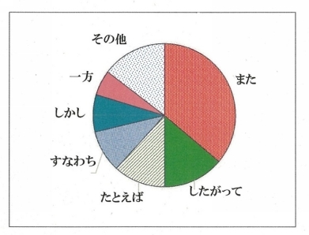
グラフを見ると，「また」「したがって」「たとえば」「すなわち」「しかし」「一方」などが多く使われています。これら６つの接続詞で約85％を占めています。この中で，「たとえば」は教科書なので，わかりやすく説明するために多用されていると考えられます。「また」が最も多く使われていますが，「また」の多用には問題があります。
◎ 次の節からはレポートで使用される主な接続詞，
「しかし」「一方」「したがって」「すなわち」「また」
について，不適切な使用例をあげて説明します。
3.2 「しかし」の使い方
「 しかし 」をなんとなく使うのはダメ！
「しかし」の使い方について，高校の教科書（物理，化学）と大学生の実験レポートの文章例をあげて検討します。
「しかし」は，前文のトピック（助詞「は」参照）で示された内容と，「しかし」で始まる次の文のトピックの内容が同じか，あるいは内容に関連がある場合に使います。ただし，「しかし」の前後の文で結果・現象・状態などが異なる場合に限られます。
3.2.1 適切な 使用例
① トピック 「は」 が使用されている例
〇 例
・ 空気などの気体に は ，通常，電流は 流れない ．
しかし ，雷のように雷雲と大地の間の電圧が10億V
以上になると，電流が 流れるようになる ．
・ 雨粒が重力だけを受けて100 m落下すると，その速さ
ｖ[m/s] は ，上式より ｖ≒44 m/s となる ． しかし ，実
際は大粒の雨でも 10 m/s 程度である ．これは，雨粒
の速さが大きくなると空気の抵抗力も大きくなるため
である．
・ 単位にモルを用いる場合 は ，粒子の種類を 示す必要が
ある ． しかし ，粒子の種類が明らかな場合，それを 省
略することもある ．
② トピック 「は」 がない例
「しかし」の前後の内容が明らかに同じトピックに関
する記述の場合，「は」が 省略されることもあります 。
〇 例
・ 水道水中に含まれる鉄イオンや銅イオン程度であれ
ば， 滴定に差し支えない ． しかし ，不純物などによる
妨害イオンが多い場合， マスク剤を用いる必要があ
る ．
3.2.2 「 しかし 」の 誤用 例
× 例１
[原文]
弦や膜など， 楽器 は その一部を振動させて音を出す． しかし ，それだけでは大きな音は出にくく， 多くの楽器は何かに共鳴させて大きな音を出す．
↓
[不適切な部分]
弦や膜など，楽器はその一部を振動させて 音を出す ． しかし ，それだけでは大き な 音は 出にくく ，多くの楽器は何かに共鳴させて 大きな音を出す ．
注
＊「音を出す」ことと「 大きい 音を出す」ことは，内容が
違います。最初の文は「音が出る」理由を述べ，「しかし」
以降の文は「 大きな 音」を出すための情報を追加している
ので，この場合は「 しかし 」ではなく「ただし」が適切
です。
＊レポートでは「大き な 」ではなく「大き い 」を使ってくだ
さい。
＊「～にくい」は客観的な表現ではありません。
＊「～出にくく」の部分は，理由を述べているので「～ ため 」
を使います。
＊「大きい音を出す」という部分が重複しています。最後の
部分は「共鳴させて...」を「させている」とします。
↓
[修正例]
弦や膜など，楽器 は その一部を振動させて音を出す． ただし ，それだけでは大きい音は出ない ため ，多くの楽器は何かに共鳴させている．
「 しかし 」の 誤用例
× 例２
[原文]
海水は，ろ過によって浮遊物を除くと一様な液体となり，水と同じように 見える ． しかし ，海水には食塩などのいろいろな物質が 溶けている ．
注
＊「しかし」以降は前文の「...見える」と逆の内容を述べて
いません。「見える」がそうではないことを記述している
ので，「～が」を使って一文にまとめます。
↓
[修正例]
海水 は ，ろ過によって浮遊物を除くと一様な液体となり,水と同じように見える が ，食塩などのいろいろな物質が溶けている．
3.2.3 「 しかし 」を使っ た 悪文例
× 例１
[原文]
原子 は 全体としては電気を帯びていない． しかし ，原子は電子を放出したり取りこんだりすることがあり，このようにして電気を帯びた原子をイオンという．
↓
[不適切な部分]
原子は全体としては電気を帯びていない． しかし ， 原子は 電子を 放出し たり 取りこん だりする ことがあり ／ このようにして 電気を帯びた原子をイオンという．
注
＊前文は「原子」についての記述であり，後の文は
「イオン」の定義文です。後の文は「 ／ 」のところ
で切ります。
＊前文と同じトピック「原子は」は削除します。
＊「～たり～たり」は話し言葉の表現です。
＊「 ／ 」の後の「このようにして(方法を示す)」は，
「このような」とします。
↓
[修正例]
原子 は 全体としては電気を帯びていない． しかし ，電子を放出あるいは取りこむことによって電気を帯びる．このような原子をイオンという．
× 例２
[原文]
今回の実験結果を見るかぎりで は デジタルインジケータが最も精度が高く，すきまゲージの厚み測定には適していたと思われる．しかしながら， 形状が複雑なものの測定には不適であると考えられる．
↓
[不適切な部分]
今回の実験結果 を見るかぎり ではデジタルインジケータが最も精度が高く，すきまゲージの厚み測定には適していたと思われる． しかしながら ， 形状が複雑なもの の測定 には不適であると考えられる．
注
＊「見る かぎり 」は話し言葉です。「を見るかぎり」の部分は
削除します。
＊「しかしながら」は「しかし」と同じです。工学系論文には
使われている場合もありますが，レポートでは「しかし」を
使ってください。
＊「測定」が重複しているので，「しかし」の後の文では削除
します。
↓
[修正例]
今回の実験結果で は デジタルインジケータが最も精度が高く，すきまゲージの厚み測定には適していたと思われる． しかし ，形状が複雑なものには不適であると考えられる．
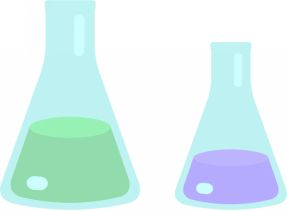
3.3 「一方」の使い方
「 一方 」と「一方，他方」は違う！
「一方」の前文とその後に続く文には，それぞれ異なったトピック（助詞 「は」 で示される）があります。後の文が前文と同種の内容・事柄で，対比的な関係にある場合に使用します。
3.3.1 適切な 使用例
〇 例
・ 砂糖 は ， 炭素，水素，酸素 の原子が結びついて分子を
つくっている． 一方 ，食塩 は ， ナトリウムと塩素 の原
子が結びついてできている．
・ 一般に，ヒドロキシ基-OHやアミノ基-NH 2 の原子団
をもつ分子でできた物質 は ，官能基が水分子と水素結
合で結びつくので， 水に溶けやすい ものが多い．
一方 ，ヨウ素I 2 ，ナフタレンC 10 H 8 などの無極性分子
は ，水分子と結びつきにくく， 水に溶けにくい ．
・ 合成洗剤 は ，Ca 2＋ やMg 2＋ と，水に不溶な塩をつくら
ないので， 海水や硬水で使用できる ． 一方 ，セッケン
は 親水性部分がCa 2＋ やMg 2＋ と水に不溶な塩をつく
る．そのため，海水や硬水では使用できない．
3.3.2 「 一方 」の 誤 用 例
前文と「一方」以降の文の内容・事柄が同種でない例，あるいは他の接続詞が適切な例です。
× 例１
[原文]
みがいた銅線をガスバーナーの炎にかざすと，黒い酸化銅(Ⅱ)CuOになる． 一方 ，熱した酸化銅(Ⅱ)を水素中に入れると，もとの銅の色にもどる．
↓
[不適切な部分]
みがいた銅線をガスバーナーの炎にかざすと， 黒い酸化銅(Ⅱ)CuOになる ． 一方 ，熱した酸化銅(Ⅱ)を水素中に入れると， もとの銅の色にもどる ．
注
＊この文章は「銅」について書かれています。この場合，
「一方」は適切な接続詞ではありません.「逆に」が適切
でしょう。
＊「酸化銅(Ⅱ)CuOになる」と「もとの銅の色にもどる」は，
前者が化学反応について述べているのに対して，後者は色に
ついて書いています。化学反応に関しての記述であれば，
後者を「もとの銅にもどる」にします。
↓
[修正例]
みがいた銅線をガスバーナーの炎にかざすと，表面が黒色の酸化銅(Ⅱ) CuOになる． 逆に ，熱した酸化銅(Ⅱ)を水素中に入れると，もとの銅にもどる．
× 例２
[原文]
測定値のばらつきが最も小さかったのは，デジタル・インジケータであった． 一方 ，ノギスは，複雑な形の物体の概形を計るのには適しているが，すきまゲージの厚さ測定にはあまり適してないように思われる．
↓
[不適切な部分]
測定値のばらつきが最も小さかったの は， デジタルインジケータ であった． 一方 ，ノギスは [ばらつきが大きいため] 複雑な形の物体の概形を計るのには適しているが，すきまゲージの厚さ測定には あまり 適してない ように思われる ．
注
＊最初の文のトピックは「デジタルインジケータ」にします。
＊「一方」に続く文には「（ノギスは） ばらつきが大きい
ため ，」という部分を挿入しないと前文との関係が明確に
なりません。
＊「あまり...」は主観的な表現なので，レポートには使わない
でください。
＊「思われる」は「考えられる」のほうがいいですが，この
場合は削除します。
↓
[修正例]
デジタルインジケータ は ，測定値のばらつきが最も小さかった ． 一方 ，ノギス は ばらつきが大きいため ，複雑な形の物体の概形を測るのには適しているが，すきまゲージの厚さ測定には 適していない ．
◎ 「一方」には，他に [一方，他方] という対で使われ
る用法があります。これはここで取り上げた「一方」
とは使い方が違います。
3.4 「したがって」の使い方
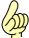 文と文の関係をよく考えよう！
「したがって」 は，ある程度の論理展開の後に，その結論を導く接続詞です。
3.4.1 適切な 使用例
〇 例
・ 化学反応を起こすには，反応物を構成している粒子
どうしを衝突させる必要がある．単位時間に衝突する
粒子の数が多いほど反応の機会が増え，反応速度も大
きくなる． したがって ，一般に気体中の反応は液体中
より粒子が移動しやすいため，反応速度が大きくなる．
・ ボイルは，気体の体積について「温度が一定のとき，
一定量の気体の体積は圧力に反比例する」ことを発見
した．この関係をボイルの法則といい，気体の体積を
υ，圧力をpとすると，この法則は次式で表される．
υ＝κ/p または ， pυ＝κ (κは定数 )
したがって ，一定温度のもとで，圧 力 p 1 ，体積 υ 1 の気体が，圧 力 p １ ，体積 υ 2 に変化したとき，次式が成り立つ．
p 1 υ 1 ＝ p 2 υ 2 ( ＝一定 )
3.4 .2 「 したがって 」の 誤 用 例
学生の実験レポートを読むと会話で「だから(話し言葉)」を使うようなところに「したがって」が気軽に使われています。不要な場合が多いようです。また，前後の文の関係が正しく理解されていないため，他の接続詞のほうが適切な例もよく見られます。
× 例１
[原文]
硝酸カリウムKNO 3 は，温度により溶解度が大きく変化する． したがって ，このような物質の飽和水溶液を冷やすと，結晶が析出してくる．
注
＊この文章では 「したがって」 の後の文が結論になって
いません。「このような」があるので，「したがって」は
不要です。
＊「析出してくる」は「析出する」にします。
＊「てくる」は状態が変化することを記述する場合に使い
ます。
↓
[修正例]
硝酸カリウムKNO 3 は，温度により溶解度が大きく変化する．このような物質の飽和水溶液を冷やすと，結晶が析出する．
× 例２
[原文]
気体を発生させて水上置換で捕集する場合，捕集気体は水蒸気が飽和した混合気体になっている． したがって ，発生気体の分圧は，捕集気体の全圧から水蒸気の分圧を引いた値である．
注
＊１文目は２文目の理由です。「したがって」ではなく，
「そのため」とします。文末は「となる」でもいいと思い
ます。
↓
[修正例]
気体を発生させて水上置換で捕集する場合，捕集気体は水蒸気が飽和した混合気体になっている． そのため ，発生気体の分圧は，捕集気体の全圧から水蒸気の分圧を引いた値となる．
× 例３
[原文]
アボガドロの法則によれば，１molの気体の体積は，同温・同圧で，気体の種類に関係なく同じ体積を占める． したがって ，物質量の比は， 気体については 体積比と等しくなるため，同温・同圧のもとでメタン・酸素・二酸化炭素の体積の比は， １：２：１ という簡単な整数比になる．
注
＊「したがって」に続く文は最初の文の結論ではありませ
ん。「したがって」を削除します。
＊文章全体は「気体」について述べているので，２番目の文
の「気体については」は必要ありません。
＊「メタン・酸素・二酸化炭素」は「気体」の例なので「例え
ば」を前に入れたほうがいいと思います。
＊「～ため，」の後にトピックを示したほうが理解しやすい
ので，「同温・同圧のもとで」は後に移動します。その他，
不要な情報 (「という簡単な整数比」) は削除します。
↓
[修正例]
アボガドロの法則によれば，１molの気体の体積は，同温・同圧で，気体の種類に関係なく同じ体積を占める．物質量の比は体積比と等しくなるため， 例えば ， メタン・ 酸素・二酸化炭素の体積の比は同温・同圧で １：２：１ となる．
3.5 「すなわち」の使い方
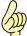 「 すなわち 」と「つまり」は使い方が違う！
レポートでは「つまり」を使う必要のある文章を書かないようにしてください。「すなわち」は，以下のような場合に使われます。
・日常語で説明された概念を専門用語で言い換える場合
・科学的な事象を説明し，その[こと，概念] などを専
門用語で記述する場合
・文で説明したことを式で表す場合
3.5.1 適切な 使用 例
〇 例
・ 原子が電子を放出，あるいは取り込むと， 電気的に
中性でない粒子 ， すなわち ， イオン が生成する．
・ 原子核中の陽子の数をその原子の原子番号という．
原子番号によって 原子の種類 ， すなわち 元素 が決
まる．
・ 本実験では，カルシウムイオンとマグネシウムイオン
の含量をCaCO 3 に換算し，水の総硬度を mg /ℓ ， すな
わち ppm で表示するアメリカ硬度で算出した．
・ コイルで消費する電力P L は， コイルを流れる電流 I L
とコイルに加わる電圧 V L の積 になる． すなわち ，
P L ＝ I L V L ＝ I 0 V 0 / 2・sin 2ωt
3.5.2 「 すなわち 」の 誤 用 例
「すなわち」が不適切な位置で使われている場合，「すなわち」の前後の内容が反対になっている例などです。
× 例１
[原文]
人間の眼が接近した二つの点を2点として識別する能力 について考える．この分解しうる2点の最小距離 ， すなわち 眼の分解能は，正常な眼の場合，目視距離250mmにおいて約0.06 mmである．
注
＊「について考える．...最少距離」の部分は不要なので，削除
します。
＊「すなわち」の前に「，」を入れます。前後に入れる場合も
あります。
＊「において」は「場合」が適切ですが，その前に「場合」が
あるので「で」とします。
↓
[修正例]
人間の眼が接近した二つの点を２点として識別する能力 ， すなわち 眼の分解能 は，正常な眼の場合，目視距離 250mmで約0.06mmである．
× 例２
[原文]
水素原子のほとんどは，質量数が1である．つまり，その原子核は，陽子1個だけでできており，中性子をもたない．ところが，自然界には質量数2の水素原子， すなわち ，原子核が陽子1個と中性子1個からできている水素原子がごくわずかに存在している．
↓
[不適切な部分]
水素原子のほとんどは，質量数が1である．
つまり
，その原子核は，陽子1個
だけ
でできており，中性子をもたない．
ところが
，自然界には質量数2の水素原子，
すなわち
，原子核が陽子1個と中性子1個からできている水素原子がごくわずかに存在している．
注
＊この文は「すなわち」の前後の内容が逆になっています。
＊「つまり」「ところが」はレポートでは使わないでくだ
さい。
＊この文章では「ところが」ではなく，「しかし」を使い
ます。
＊「だけ」は必要ありません。
＊「原子核」が２回書かれています。２つ目は省略します。
↓
[修正例]
水素原子のほとんどは，質量数が1である．その原子核は，陽子1個でできており，中性子をもたない．しかし， 自然界には陽子1個と中性子1個からできている水素原子 ， すなわち ， 質量数2の水素原子 がごくわずかに存在している．
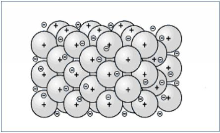
◎ 「すなわち」 と 「つまり」 の使い分け
"理工系の分野では「すなわち」は一般的な表現で説明した事柄を専門用語で言い換えるときに使用する．「つまり」はその前の語・表現をわかりやすく説明するために使われる．"
『理科系の作文作法』高木隆司著より
3.6 逆接の「が」の使い方
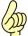 意味のない「 ～ が (接続)」を使わない！
接続助詞「～が，」は，国語辞書で「逆接を示す場合に使用」となっています。しかし，日常会話では，下記の例のような，省略しても意味には関係しない使い方を頻繁にしています。
例： 「... 偶然誤差について説明した が ，この他に系統
誤差がある 」
科学技術文では，「～が」は対比の表現として使用されるのが一般的です。「対比」の表現として以下の２つの使い方があります。
① 文のトピック（助詞「は」で示された主題）で示さ
れた内容が，「が」以降では違う，あるいは反対の
状態・結果になる場合に使います。
② 内容が対比関係にある２つの文（トピックが違う）
を接続する際に使われます 。
3.6.1 適切な 使用例
①の例
〇 例
・ 等速円運動の加速度 は ，大きさは 変化しない が ，向き
が 変化する ．
・ エタノール は ，20℃で44mmの水銀柱に相当する圧力
(5.9 kPa)を示すまで 蒸発する が ，それ以上は 蒸発しな
い ．
・ 鉄粉と硫黄の粉末 は ，常温で混ぜ合わせただけでは 反
応しない が ，この混合物を加熱すると，容易に 反応
し ，硫化鉄(Ⅱ) FeSを生じる．
② 内容が対比関係にある文の接続 例
〇 例
・ 溶液を構成する一部の成分 は 通す が ，ほかの成分 は 通
さない ような膜を半透膜という．
・ 電気の場合 は 正あるいは負の一方だけの電気を帯びた
電荷が 存在する が ，磁気の場合 は 一方の磁極からなる
磁石は ない ．
・ 純粋な水 は 0.00℃で凝固して 氷になる が ，不揮発性の
非電解質の0.10 m oℓ /kg水溶液 は －0.19℃にならない
と溶媒である水の 凝固は始まらない ．
3.6.2 「 ～が 」の 誤 用 例
× 例１
[原文]
今回の実験ではアンモニア水－塩化アンモニウム緩衝溶液を用いた が ， それ は液を最適なpHに保つためである．
注
＊この文で「が」は必要ありません。「が」を削除して，文を
切ります。
＊理由を表す場合，科学技術文では「それは～」は使いま
せん。「これは～ためである」を使ってください。
↓
[修正例]
今回の実験ではアンモニア水－塩化アンモニウム緩衝溶液を用いた．これは液を最適なpHに保つためである．
× 例２
[原文]
今回の実験はこれまでの実験と比べると滴定を行わなければならない回数が多かった が ，実験誤差もほとんど生じなかったと思った．
↓
[不適切な部分]
今回の実験 は これまでの実験と比べると滴定を行わ なければならない 回数が多かった が ，実験誤差 も ほとんど生じなかった と思った ．
注
＊「～なければならない」は主観的表現なので，レポートには
使いません。
＊「が」は文の前半と後半が対比の関係ではないので，不適切
です。「にもかかわらず」などの表現を使います。
＊「～誤差 も 」の部分は前半のトピック「今回の実験 は 」と同
じトピックについてなので，主語を示す「が」とします。
＊「生じなかった」のは事実なので，「と思った」と続けるの
は変です。
↓
[修正例]
今回の実験は，これまでの実験と比べると滴定を行う回数が多かったにもかかわらず，実験誤差がほとんど生じなかった．
3.7 「また」の多用はだめ！
「 また 」 の多い文は非論理的！
3.1 に使用頻度の高い接続詞をあげました。その中で「また」が最も多く使われていますが，「また」の多用には問題があります。
3.7.1 適切な 使用例
★ 同じ事柄について「また」以降の文で違った条件・
性質・状態などが記述されている場合．
〇 例
・ 分子に大きさがあると，理想気体に比べて実在気体の体積が大きくなる．したがって，実在気体の体積 を V [ℓ] とすると，
V = V R ＋ b
ここで，bは分子の大きさの効果を表す定数であり，気体の種類により異なる． また ，分子間に引力が働くと，理想気体に比べて実在気体の圧力が小さくなる．
・ 窒素，水素，アンモニアの混合気体 が N 2 ＋ 3H 2 ⇔ 2NH 3 の可逆反応で平衡状態にある場合，温度を上げると逆反応が進む． また ，圧力を上げると正反応が進み，それぞれ新たな平衡状態になる．
3.7.2 「 また 」 の 誤 用 例
★ 「また」が不要な例
① 「また」を入れなくても前の文とのつながりが
不自然ではない場合，「また」を使用しない．
② 文の最初に「この～／その～」という前の文の
一部を指す表現がある場合，「また」は使用しな
い．（科学的な文には「 あの～ 」は使用しない）
③ 「反対に」「逆に」「反面」といった逆説的な表現
がある場合，または他の接続詞などがある場合，
「また」を同時に使用しない．
① の例 （「また」不要）
・
磁石やコイルを速く出し入れするほど，
また
磁石
の磁場が強いほど,コイルに生じる誘導起電力は大
きくなる．
・ 水素はアンモニアの合成に最も多く使われるが，
そのほか，塩化水素メタノールの合成などに使わ
れ，
また
，液体水素は口ケット用の燃料としても
用いられる．
・ 一般に, 高温の固体や液体から出る光は，連続スペク
トルになる．
また
，高温の気体が出す光は, その気体
に特有の線スペクトルになる．
・ 周期表の左下にある典型元素，およびすべての遷移元
素は，金属元素である．
また
，周期表の18族以外の
典型元素では，右上にいくほど陰性(非金属性)が強く
なる傾向があり，周期表の右上にある典型元素は，非
金属元素である．
② の例 （「また」不要）
・ 救急車のサイレンや電車に乗って聞く踏切の警報機
の音は，近づくときは高く，遠ざかるときは低く聞
こえる．
また
，
その
変化は救急車や電車が速く動く
ほど大きい．
・ 凸レンズの焦点の外側に物体を置くと, 後方のスクリ
ーンに物体と相似な像ができる．この像は,実際に物
体からの光が集まってできるので, 実像という．
また
，
この
実像の向きは物体と反対になるので, 倒立
像という．
③ の例 （「また」不要）
・ 一次コイルに電流を流している状態からスイッチを
切ると,その瞬間に二次コイルに誘導電流が流れる．
また
,
反対に
スイッチを入れたとき, その瞬間に二次
コイルに誘導電流が流れる．
・ ...増加した物質の濃度が減少する方向に平衡が移動
する．
また
，
逆に
一つの物質の濃度を減少させる
と，...
◎ 論理的な文章を書くために
論理的な文章を書くために「接続詞の頻度」についての記述を『理科系の作文作法』高木隆司著から以下に引用します。
「 接続詞は，筋道を明確にするためのものである．
（中略 ） その数を決めるための方法を提案する．書き上げた原稿から接続詞をすべて隠した後，それを読んでみて，文に欠陥がなく，やはりすじが通らなければ，接続詞が必要である．この手続きによれば，続行・順接の接続詞は削除され，逆説の接続詞が復活する場合が多い. 」
「また」は不必要に多く使用されています。上記の高木の手法を使い，書いた文章を推敲することを奨めます。
3.8 レポートで 使わない 「接続詞」
以下にあげた接続詞類は，学生の実験レポートに使われた不適切な例です。
★ 不適切な 「接続詞」 類
|
いわば |
それに |
とはいえ |
|
けれども |
だが |
ないしは |
|
こうして |
だから |
なぜなら |
|
さて |
だけど |
ならびに |
|
しかも |
ただ |
にもかかわらず |
|
すると |
ちなみに |
のみならず |
|
そこで |
つまり |
もしくは |
|
そして |
でも |
もっとも |
|
それから |
ところが |
実は |
|
それで |
ところで |
要するに |
|
それでも |
とはいうものの |
|
|
|
|
|
★ 使用が制限される 「接続詞」 類
ゆえに，よって
... 数式の過程，結論などを示す場合に使用する。
４． 表現の使い方・使い分け
4.1 「とき」と「場合」の使い分け
「 とき 」の使い方は限られている！
実験レポートには，「～とき」と｢～場合｣ が頻繁に使われます。「～とき」は，科学技術文では使い方が限定されます。
4.1.2 「 とき 」 の使い 方
① ある時点 で，ある現象・変化が起こる場合
② ある現象などが 起きた時点 で他の現象が起こる，
あるいは，ある現象が起きている間に 並行して 他
の現象が現れる場合
③ 数式などでその中に使われている定数・変数の条
件，範囲を限定する場合
注：「～時(とき)」は漢字ではなく，ひらがなで書きます。
★ 適切な 「 とき 」の使用例
〇 例
①の例
・ 水を加熱すると100 ℃（１気圧）に達した とき， 沸
騰する．
・ 物質が固体から液体へ，液体から気体へと状態を変え
る とき ，分子の熱運動の様子は大きく変化する．
②の例
・ 秋から冬にかけて，湖水の温度が4℃以上の とき ，冷
えた外気が表層の水を冷やすと，冷やされた水は収縮
して密度が大きくなり沈み込む．
・ 電子 が M N 間を運動している とき ， M N の方向に電界
E をかけると，図の上向きに一定の 力F を受け，加速
度は ，g 方向 に a y＝ e E/ m となる．
③の例
・ 式 (３) は n が正の整数であり ， m ＝ － n の とき ，成り
立つ．
・ X＞ 10 0 の とき ，次式を用いることができる．
4.1.3 「 場合 」 の使い方
★ 「 場合」は２つ以上の状況・条件などがあることを
前提にしています。
〇 例
・ 物体の密度が水より大きい 場合 ，物体は沈む．（「小さ
い場合」，「等しい場合」がある）
・ 一定の力Ｆでひもを斜め上方に引き続けてタイヤを動
かす 場合 ，力の向きと物体の動く向きが異なる。
4.1.4 「 とき 」の 誤 用 例
以下のような例では，「とき」ではなく，「場合」を使います。
× 例１
[原文]
これは小さな値を読む とき に は使用できないと思われる．
注
＊この文では「小さな値」「大きな値」という選択肢があり
ます。単に「値を読む(測定する)」という行為の瞬間を示す
のであれば，「とき」が適切です。
＊「小さ な 」「大き な 」はレポートでは「小さ い 」「大き い 」
を使ってください。
↓
[修正例]
これは小さい値を測定する 場合 には，使用できないと思われる．
× 例２
[原文]
周期と弦の長さの関係については，弦の長さ が 0.2 m の とき ，周 期T＝ 0.90 4， 0.6 m の とき ，周 期T＝ 1.54 9 となった．
↓
[修正例]
周期と弦の長さの関係については，弦の長さが0.2mの 場合 ，周期T＝0.904，0.6mの 場合 ，周期T＝1.549となった．
× 例３
[原文]
このことから，抵抗をつけた
時
のほう
がより誤差が少ない測定が
できる
ことがわかる．
注
＊「誤差が 少ない 測定が」ではなく「測定誤差が 小さく なる」
とします。
＊レポートでは「できる」は使いません。「可能である」を使
いますが，この文では必要ありません。
↓
[修正例]
このことから，抵抗をつけた 場合 がより測定誤差が小さくなることがわかる．
4.2 ｢て形｣と「連用形」の使い分け
「 て形 」の使い方は限られている！
「て形」というのは，国語文法の活用形にはありません。日常の会話で使う「リサイクルショップへ 行って ，テレビを 買って ...」などのような活用形です。これを外国人に対する日本語教育では「て形」と呼びます。
「連用形( 用い ， 影響し ，...)」は理系の教科書で見たことがあると思います。科学技術文では，「て形」「連用形」ともに使われます。
「て形」と「連用形」がどう使い分けられているか，例をあげて説明します。
4.2.1 「 て形 」 の使い 方
「て形」は，後続する動詞の 手段・方法 などを表します。「手段・方法」を表す場合「て形」だけでなく，「連用形」も使います。
★ 適切な「 て形 」の使用例
〇 例
・ ３枚のアクリル板で 挟まれて 固定されている．
・ 混合液②をビュレットで 滴下して 加えた．
・ ここでは音圧レベルを図1に示すように，管群の上部
で騒音計を 用いて 測定する．
☆ 不適切な「 て形 」の使用例
× 例１
[原文]
つり下げ振り子の実験では，周期などに誤差が 発生 して ， 必ずしも成功したデータとはいいがたかったが ，位相差はほぼ理論値に近いπ/2となった．
注
＊「誤差が 発生して 」の部分は，「...いいがたかったが」
の「根拠」を書いたと思われます。「て形」の使い方が不
適切です。
＊「誤差が 発生し て 」ではなく「生 じ 」とします。
＊「必ずしも成功したデータとはいいがたかった」の部分は
主観的な感想なので，削除します。
↓
[修正例]
つり下げ振り子の実験では，周期などに誤差が 生じたが ，位相差はほぼ理論値に近いπ/2となった．
 ×
例２
×
例２
[原文]
一番 精度がよかったのは，マイクロメーター で ，これは 使いやすくて ，ある程度の...
注
＊「一番」は話し言葉です。「最も」を使います。
＊「...で」は「であり」を使います。この文では連用形を複数
使うので「...で」で文を切り，「である」とします。
＊「～やすい」は科学技術文ではほとんど使われません。
「ある専門分野で常識とされている値があり，それと比較し
た」場合は使用されることがあります。
この文の場合は「扱いが容易であり」とします。
↓
[修正例]
最も精度がよかったのは，マイクロメーターである．これは扱いが容易 であり ，ある程度の...
4.2.2 「 連用形 」 の使い 方
① １つのトピックについて，異なることがらを一文中
に記述する
② 状態の変化，実験などのプロセスを順に記述する
③ 後続する内容の理由を表す
〇 例
①の例
・ 砂糖と食塩 は ，どちらも白い粒子状 であり ，水に溶か
すと無色透明になる．
・ 溶液中のナトリウムイオンや塩化物イオン は ，熱運
動によって水分子と衝突し水中を動きまわる．その
運動のエネルギーはすべて同じ ではなく ，温度に応
じた一定の分布をしている．
②の例
・ 変化はいろいろあるが，ほとんどの場合，このよう
なクラスター群が 形成され ，流動していく．
・ 液滴の低沸点成分を基板着弾前に 蒸発させ ，高粘度の
液滴を基板に着弾させた結果，...．
③の例
・ 溶媒濃度分布に起因するＭ対流が 発生し ，液滴内が
攪拌される．
・ 入力パワーは制御入力だけでなく外乱入力も 含ま
れ ，制御対象が受動要素だけとは限らない ため ...
注
＊「理由」が複数列挙されている場合，最後の「理
由」に「ため」を使います。前の理由の部分には｢連
用形｣を使用します。
★ 一文の中で「 て形 」と「 連用形 」が使われている例
・ 表面張力の測定結果を 用いて 相関式を 作成し ，...
・ ...の伝熱媒体としては水が 用いられ ，PID 制御を
使って 温度が制御されている．
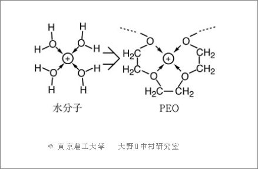
4.3 「ほど」の使い方
「 ほど ... ない 」は使わない！
「ほど...ない」は客観的な判断ではないので，科学技術文では使いません。高校の理系教科書（物理,化学,各４冊）に使われている「～ほど」を調べた結果を以下に示します。
① 「形容詞＋ほど」 約50％
② 「名詞＋ほど」 約30％
③ 「動詞＋ほど」 約13％
4.3.1 適切な 「 ほど 」の使い方
① [形容詞 ＋ほど]
文の中では「形容詞（形容動詞）＋ほど」のあとに
「形容詞 (終止形，連用形)」「～くなる」「～く＋動
詞」などがきます。
〇 例
・ (光の)散乱される割合は波長が 短い ほど 大きい ．
・ 弦楽器の弦は 細い ほど 高い 音を出す．
・ 電流に 近い ほど 密な 同心円状の磁力線ができる．
② [名詞 ＋ほど]
「名詞＋ほど」の後には「形容詞（形容動詞）」「～く
＋動詞」「～くなる」などがきます。「ほど」の前には，名詞を修飾する「形容詞（形容動詞）」「動詞(状態)＋ている」などを必ず書きます。
〇 例
・ 物体が自然落下する場合， 重い物体 ほど 終端速度が 大
きい ．
・ 分子量が 大きい単体 ほど 融点・沸点が 高い ．
・ 遠く の 天体 ほど 地球から 速く遠ざかっており , 宇宙は
膨張していると考えられるようになった．
③ [動詞 ＋ほど]
「動詞」には「形容詞＋く - なる/する」などの変化を表すものも含まれます。「ほど」の後には前記の２つの場合と同様な単語が続きます。
〇 例
・陰・陽両イオン間の距離が 大きくなる ほど 両イオンの
結合が 弱くなる ．
・水は，温度を 高くする ほど 蒸発が 盛んになる ．
・遠くまで 動かす ほど 大きな 仕事をしたと感じる．
4.3.2 「 ほど 」の 不適切な使 用 例
× 例１
[原文]
溶液のpHが 小さければ小さいほど ，α(解離度)は大きい．
注
＊「小さ ければ 小さい ほど 」はレポートでは使いません。
「小さい ほど 」とします。
↓
[修正例]
溶液のpHが小さい ほど ，α(解離度)は大きい．
× 例２
[原文]
誤差が大きかったため， やり直した が， それ ほど 誤差は小さくなら なかった ．
注
＊「それほど...ない」は，客観的な判断ではないので，レポー
トでは使いません。「さほど...ない」も同様です。
＊「やり直した」は話し言葉です。レポートでは，「再度試み
た」などを使います。
↓
[修正例]
誤差が大きかったため，再度試みたが，誤差は小さくならなかった．
4.4 「という」の使い方
有名なこと・物に「 と いう ...」は使わない！
「...という＋名詞」は，「...」の部分が読み手にとって新しい情報であることを想定しています。例えば，「マラウイという国」「ナオスという星」のように使います。よく知られている物・事については使いません。例えば「イギリス という 国」とは書きません。「イギリス」の一般に知られていない部分を紹介するような特別な場合だけ使います。「という」はひらがなで書きます。
科学技術文では，「...という こと 」「...という もの 」など形式名詞の前に使うことはありません。
4.4.1 適切な 「 という 」の使用例
〇 例
・炭素数の少ないアルコールは，金属ナトリウムと置換
反応して水素を発生し，ナトリウムアルコキシド とい
う 物質になる．
・液晶は，その中を偏光が通ると，振動方向が回転して
いくが，電圧をかけるとその回転がなくなる という 性
質がある．
・将来，何百光年 という 遠い距離にある星が観測できる
と予測されている．
4.4.2 「 という 」の 不適切な使 用 例
実験レポートを見ると「という」の不適切な使い方が多いようです。不適切な例を以下の３つに分類しました。
① 「という」が不要な例
② 「ということは(話し言葉)」という接続語として使われ
ている例
③ 「...という こと (形式名詞)」が使われている例
× 例１
[原文] ( 「 という 」 が必要ではない場合)
下げ振り子の周期は，重力加速度および弦の長さのみに依存し，振幅，重さの質量等には依存しない という ことが確認された．
↓
[修正例]
下げ振り子の周期は，重力加速度および弦の長さのみに依存し，振幅，重さの質量等には依存しないことが確認された．
× 例２
[原文] ( 「 ということは 」 が使われた例)
標準偏差も抵抗を入れた方が少なかった． ということは， 抵抗を用いたほうが精度が高いといえそうである．
↓
[不適切な部分]
標準偏差も抵抗を入れた 方 が少なかった． ということは 抵抗を用いたほうが精度が高いといえ そうである ．
注
＊「方が」は「ほうが」とひらがなで書きます。
＊接続語「ということは」は前の部分が根拠を示すので，
「このことから」とします。
＊「いえ そうである 」は根拠を示しているので，「いえる」
と言い切っていいと思います。
↓
[修正例]
標準偏差も抵抗を入れたほうが少なかった． このことから ，抵抗を用いたほうが，精度が高いといえる．
× 例３
[原文] ( 「という こと 」 が使われた例)
以上の結果から，ばねの個数が増える につれて ，ばね定数がA倍 という こと がわかる．
注
＊「...増える につれて 」は変化を表しているので，その変化に
応じて結果がどうなるかを示すためには「Ａ倍 という ことが
わかる」ではなく，「Ａ倍 となる ことがわかる」とします．
↓
[修正例]
以上の結果から，ばねの個数が増える につれて ，ばね定数がA倍 となる ことがわかる．
4.5 「といった」の使い方
「 といった 」を使えるようになろう！
☆ 「...といった＋名詞」
実験レポートで使用されていた 「...というような＋名詞」 は話し言葉なので，レポートでは「といった＋名詞」にします．「AというB」では，Aは固有名詞で，B（一般名詞）の概念に含まれるものに使いますが，「A ...といったB 」では，Bの例をいくつかあげる場合に使います．
以下に「...といった」の例を紹介します．
4.5.1 適切な 「 といった 」の使用例
〇 例
・ 向心力は，重力，摩擦力 といった 力の種類を表す
名称の1つではない．
・ ボイルの法則とシャルルの法則が正確に成り立つ
気体を理想気体という．水素，酸素，窒素，空気
といった 実在の気体は理想気体に近いが，低温や
高圧になると，これらの法則からずれてくる．
・ 分離・回収した金属イオンはリサイクルすることが
でき，環境浄化と資源循環 といった 非常に重要な
２つの役割を果たしていることになる．
4.5.2 「 とい っ た 」の 不適切な使 用 例
× 例
[原文]
滴定の失敗，目盛りの読み間違いなどのミスの可能性も全くない という わけではないが，今回は３回とも同じような滴定量であったことからこれらの可能性は極めて低い．
↓
[不適切な部分]
滴定の失敗，目盛りの読み間違い などのミスの 可能性も 全くない という わけではない が，今回は３回とも 同じような 滴定量であったことから，これらの可能性は極めて低い．
注
＊「読み間違い」は「ミス」の例で内容が重なるので，「ミ
ス」は削除します。
＊「読み間違い などのミスの 可能性」は「ミス」の例が「読み
間違い」なので，「読み間違い といった 可能性」としたほう
がいいと思います。
＊「全くないというわけではない」は簡潔に「考えられる」と
します。
＊「同じような」は話し言葉です．ここでは「同程度の」と
します。
↓
[修正例]
滴定の失敗，目盛りの読み間違い といった 可能性も考えられるが，今回は３回とも同程度の滴定量であったことから，これらの可能性は極めて低い．
学生の実験レポートには 「 目的 」「 理由 」「 根拠 」 を表す表現が適切に使い分けられていない例が多くみられます。
それらの使い分けが不適切な理由の一つは， 文の内容がどれに該当するか をよく考えていないことがあげられます。
★ 「理由」 を表す表現
「...理由，... 〇〇 」の〇〇部分に，「可能形」「受身形」 「である」「形容詞」「変化を表す自動詞／～なる」などが続く場合が多い。
○ ... ため，ので
× ... から （理由）， おかげで ， せいで
★ 「根拠」 を表す表現
ある結果になったと 判断した 事実・データを提示する 。
～ ことから ... と推測され る
～ より ... と考えられる
といえる etc.
★ 「目的」 を表す表現
「 ために 」「 ように 」の使い分け
・ 「他動詞」「形容詞 くする 」「名詞 にする 」 ＋ために
・ 「自動詞」「可能形」「否定形」 ＋ように
「形容詞 くなる 」「名詞 になる 」
５． 「日本語の文法」って？
5.1 基本的な文型
日本語の単文には，様々なものがありますが，基本的な文型は３つです。「単文」というのは，一文中に「述語」が一つある文のことです。その例を以下にあげます。
〔 名詞文 〕 ... 氷 は 固体 である ．
〔 動詞文 〕 ... 塩酸 が 鉄 を 溶かす ．
〔 形容詞文 〕... 導体 は 電気伝導度 が 高い ．
ここに書いた〔名詞文〕〔動詞文〕〔形容詞文〕というのは，この本で便宜的につけた文型の名称です。「形容動詞」 というのもありますが，文型は〔名詞文〕と同じです。
一般に使われている単文には，動詞の活用形の違いによって，「受身文」「可能文」「使役文」やそれらの複合活用形を使った文もあります。
例：
・ これ は フックの法則と 呼ばれ ，次の式で 表される ．
（受身文）
・ 時 t [s]における速 度 v [m/s] は次のように 表せる ．
（可能文）
〔形容詞文〕の例の「名詞Ａ は 名詞Ｂ が ～．」という文は，「形容動詞」「動詞」が述語にくる文にも使われることがあります。動詞の場合は 状態性を示す活用形 を使います。
例：
・ この鉄球 は 表面 が 非常に滑らか である ．（形容動詞）
・ 交流 は ＋極と－極 が たえず 入れ替わっ ている ．
（状態性の動詞）
5.2 動詞の活用形
「書き言葉」で，どのような動詞の活用形が使われているか調べてみました。以下のデータは，工学系論文（20本）に使われていた動詞の活用形使用頻度を示しています。これらの動詞は文末だけでなく，文に含まれているすべての動詞についての種類と頻度です。
「 辞書形 」 36 %
「 過去形 」 21 %
「 連用形 」 7 %
「 受身形 」 7 %
「 て形 」 5 %
「 可能形 」 3 %
96 ％
「複合活用形」 17%
「 辞書形 」 は国語文法でいう「終止形」です。辞書に載っている形という意味です。
「 連用形 」 は，動詞の 「～ます」 という形から 「ます」 を削除した形です。前にあげた例にも使われています。
例： これ は フックの法則と 呼ばれ ，次の式で表される．
「 て形 」という呼び方は国語文法にはありません。
例えば，「マイクロメーターを 用いて ，測定した」といった活用形です。
「 複合活用形 」というのは，著者の造語です。
例えば，「使役連用形」というのは，使役形「発生させる」 の連用形が「発生させ」になるという意味です。
例： コイルの中で磁石を回転して電気を 発生させ ，電
球を点灯させている.
「連続活用形」 でよく使われる種類は，あまり多くありません。頻度の高いものは，以下の３種類です。（ ）内は例です。
「～ ている 」 （安定している，利用している）
「受身過去形」（測定された，曲げられた）
「受身 ている 」（報告されている，用いられている）
前ページの結果から，「書き言葉」で使われる動詞の活用形は単純なものがほとんどであることがわかります。
不適切な 活用例 （学生の実験レポートに見られた例）
× ：～すぎる，～しか～ない，～たい，～てある，～ておく，
～てしまう，～てみる，～てもいい，～ないで，
～ながら，～なければならない，～にくい，～やすい
△ ：～ていく，～てくる，
[～にくい，～やすい]
（基準が明確な場合，それと比較して使われることがある）
5.3 助詞
工学部の教員から「卒論を書かせると"てにをは"から直さなくちゃいけないから手間がかかる」と聞いたことがあります。「てにをは」というのは「 助詞 」のことです。
日常会話では，「助詞」を省略することがよくありますが，「書き言葉」では省略しません。生まれたときから日本語を自然に覚えてきた人は，意識しないで助詞を使えるようになっているはずですが，文章を書くときには，どうして正しく使えないのでしょうか。「助詞」について，あまり意識していないからかもしれません。文章を書く前に「助詞」の種類とその機能を知っておいてください。
「助詞」には種類がいくつかあります。ここでは，主要な種類について説明します。
「格助詞」というのは，述語動詞とその前の名詞との関係を表すものです。例えば，「名詞Ａ」が動詞の主語の場合，その後にくる助詞が「主格」を示し，「名詞Ｂ」が目的語の場合はその後に「目的格」を示す助詞がきます。
「 格助詞 」には以下のように２種類あります。
・ 動詞 によって 決まっている助詞
例： 気体 が 液体 に 変わる .
・動詞に関係なく， [時間・手段・範囲など]を示す助詞
例： 水が１気圧100℃ で 気体になる.
★ 係助詞 （かかりじょし）
学生の実験レポートで一番あいまいに使われているのは，係助詞「 は 」だと思います。「は」は適切に使うと文章をすっきりと読みやすくしますが，機能を理解しないで多用すると訳のわからない文章になります。係助詞（「は」と「も」）は，格助詞と違って，単文（述語が一つの文）ではその機能が発揮されません。第６章で詳しく述べます。
例えば，以下の２つの単文を一文にする場合「は」を使います。その際，②の[水が１気圧で]の部分は削除します。
① 水 が １気圧０℃で固体になる．
② 水 が １気圧100℃で気体になる．
➡ 水 は １気圧０℃で固体になり，100℃で気体になる．
２つの単文を文章としてまとめる場合は以下のようになります。
① 酸の水溶液 が 酸味を示す．
② 酸の水溶液 が 鉄などの金属と反応して水素を発生する．
➡ 酸の水溶液 は 酸味を示す．また，鉄などの金属と反
応して水素を発生する．
この場合も，④の[酸の水溶液が]の部分は削除します。前後の文の内容に関連性が薄く，唐突な感じがする場合は，接続詞を入れます。
「は」「も」を使う場合，本来，助詞「が」「を」を使う個所では置き換え，他の助詞（「で」「に」「へ」「から」など）ではその助詞に付け加え，文の最初に移します。
例： 水が１気圧100℃ で 気体になる．
→ １気圧100℃ では 水が気体になる．
６． 「は」で文章が決まる！
「 は 」を意味なく多用すべからず！
6.1 助詞「は」の機能
レポート・報告書では，「 は 」は ★ トピック を示す場合
と ★ 対比 を表す場合に使います。
6.1.1 トピック （主題）
第５章で書いた〔名詞文〕，〔形容詞文〕の「 は 」はその前の名詞がトピックを示します。「 トピック 」とは，「それ以降，その名詞について述べる」という意味です。〔動詞文〕の基本型には 「は」 がありません。動詞の主語を示す助詞は 「が」 です。動詞文で「は」を使う場合については，第５章で述べました。
以下の例で"塩酸"をトピックとする場合，
「が」 → 「は」 とします。"鉄"をトピックとする場合，「を」→「は」とし，文頭に移動させます。この場合，受身文にすることが多いようです。
・ 塩酸 が 鉄を溶かす．→塩酸 は 鉄を溶かす．
・ 塩酸が鉄 を 溶かす ．
→ 鉄 は 塩酸 によって 溶かされる ．
注
＊レポートでは，人が動詞の主語になる文はありませ
ん。主語をトピックにする場合，受身文にします。
動詞を受身形にする場合 [～ に 溶かされる] では
なく，[～ によって 溶かされる] とします。
6.1.2 対比
２つの物・事象などを対比して記述する場合も「 は 」を使います。
・ 銅 は 電気を通すが，カルシウム は 通さない (と考えて
よい)．
・ 地球に は 水がある．しかし，火星に は ないと考えられ
ていた．
注
＊対比を表す場合，一文の中では [～が，～に対し] ，２
文では [これに対し，一方] が使われます。
★ 以下の例文では，一文の中に 「 トピック 」と「 対比 」 が
使われています。
・ 窒素 は ,室温で[ は ]気体であるが,－196℃以下で は 固
体である．
・ 音 は 空気中で[ は ]伝わるが，真空中で は 伝わらない.
注
＊[ は ] は入れる場合と入れない場合があります。トピックの「 は 」と位置が近い場合は，入れなくていいと思います。
★ 以下の例文は，「 は 」が 「 トピック 」 と 「 対比 」 の両方の機能を持っています。
・ リニア同期モータ式の磁気浮上鉄道で は ，車両側に推
進に関わる制御装置を持つ必要がないのに対し，軌道
建設の初期費用が膨らむ欠点がある．一方，誘導モー
タ式 は ，構造が同期モータに比べて単純であるが，エ
ネルギー効率が劣る．
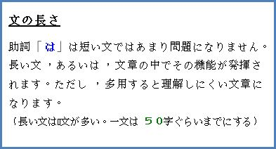
6.2 不適切な 「 は 」 の 使用例
例１～例４は学生の実験レポートに見られた「は」の不適切な使用例です。例文の数値は原文のままです。
× 例
[原文]
飲料水として適当な硬度 は ，10～100 (mg /ℓ )であり，この値 は ，日本の自然水の硬度20～80 (mg /ℓ ) を含んだ範囲である．ヨーロッパなどの自然水の硬度 は 200～400 (mg /ℓ )であるため，飲料水として は あまり適さない．
↓
[不適切な部分]
前半部分
飲料水として適当な硬度
は
，10～100(mg
/ℓ
)
であり
，
この値
は
，日本の自然水
の
硬度20～80(mg
/ℓ
)
を含んだ範囲である
.
注
＊１文中に２つのトピックがあり，それが異なっているので，
２文に分けます。一文中ではトピックの「 は 」は一つ使って
ください。
＊全体のトピックは「水の硬度」ですから，「日本の自然水」
をサブトピックとします。そのトピックに関する「硬度の
値」と「範囲に含む」という情報は並列であるため，前の
情報を「であり(連用形)」にします。
↓
[前半修正例]
飲料水として適当な硬度 は ，10～100(mg /ℓ ) である．日本の自然水 は ，硬度20～80(mg /ℓ )であり，この範囲に含まれている．
後半部分
ヨーロッパ
など
の自然水
の
硬度
は
200～400(mg
/ℓ
)であるため，飲料水として
は
あまり
適さない．
注
＊この文では，「ヨーロッパの自然水」をトピックにします。
「日本の自然水」との「対比」を強調する場合は，「これに対して」を文の初めに挿入します。
＊「硬度」は全体のトピックにも前の文にもありますから，
省略できます。
＊一文の中に２つ以上「 は 」が入っているとわかりにくくなる
ので，「飲料水として は 」の「 は 」は，削除します。「など」
は地域を限定する場合，使用しません。
＊「あまり」は客観的表現ではないので，削除します。
↓
[全体の修正例]
・ 飲料水として適当な硬度 は ，10～100(mg /ℓ ) である．
日本の自然水 は ，硬度20～80(mg /ℓ )であり，この範囲
に含まれている．これに対して，ヨーロッパの自然水
は (硬度)200～400 (mg /ℓ )であるため，飲料水として適
さない．
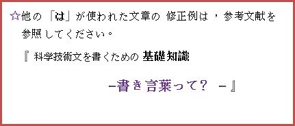
引用文献
・朝永振一郎著作集２『物理学と私』みすず書房(1982)
・深尾良夫著『地震・プレート・陸と海 地学入門』
岩波ジュニア新書92 (1985)
・『なぜなぞ科学「筋肉痛の仕組みは？」』毎日新聞
2003年9月27日
・高校教科書(2006年版)
『物理Ⅰ』『物理Ⅱ』『化学Ⅰ』『化学Ⅱ』啓林館
『物理Ⅰ』『物理Ⅱ』『化学Ⅰ』『化学Ⅱ』数研出版
・小川雅彌 監修代表『化学のレポートと論文の書き方』
化学同人(1999)
・太田恵造著『卒業論文作成の手引き』アグネ技術センター
・木下是雄著『理科系の作文技術』中公新書(1981)
・高木隆司著『理科系の論文作法』丸善株式会社(2003)
・見延庄士郎著『理系のためのレポート・論文完全ナビ』
講談社サイエンティフィク(2008)
・山口喬著『エンジニアの文章読本』培風館(1988)
・山崎信寿 他著『科学技術日本語案内-改訂版』
慶應義塾大学出版会(2002)
・若林敦著『理工系の日本語作文トレーニング』朝倉書店(2000)
・ 深尾百合子著
『科学技術文を書くための基礎知識‐書き言葉って‐』
★ 次ページ参照 アグネ技術センター
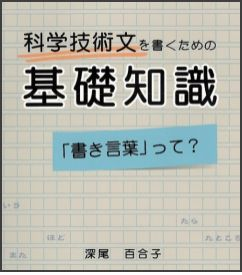
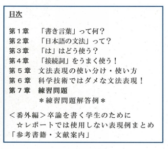
索引
項目 項目
論理的な文章 （ろんりてきなぶんしょう）
レポート・報告書 で 使用しない 表現
項目
て形 （ダメな「～て...」）
... は （ダメな「は」の使い方）
また （多用はダメ）
|
ダメな表現例 |
|
|
|
かもしれない |
急に （きゅうに） |
それから |
|
すぎる |
けっこう |
それで |
|
そう （硬そう） |
ずいぶん |
それでも |
|
そう （実験するそうだ） |
すぐ |
それに |
|
たい （やりたい） |
すごい |
だが |
|
だろう |
せっかく |
だから |
|
てもいい |
ぜんぜん |
だけど |
|
つもり |
それほど |
ただ |
|
ないで |
たくさん |
ちなみに |
|
ながら |
ちょうど |
つまり |
|
のに |
なかなか |
でも |
|
ばかり |
なんとか |
ところが |
|
はず |
ふつう |
ところで |
|
べき |
べつべつに |
とはいうものの |
|
まま |
まだ～ない |
とはいえ |
|
もの |
まっすぐ |
ないしは |
|
もの （1500℃に も なる） |
もう |
なぜなら |
|
らしい |
もちろん |
ならびに |
|
わけ |
もっと |
にもかかわらず |
|
だ （です） |
いわば |
のみならず |
|
あとで |
けれども |
もしくは |
|
一番 （いちばん） |
こうして |
もっとも |
|
いっしょに |
さて |
実は （じつは） |
|
いつも |
しかも |
要するに （ようするに） |
|
いろいろ |
すると |
から （理由） |
|
うまく |
そこで |
せいで |
|
かなり |
そして |
おかげで |